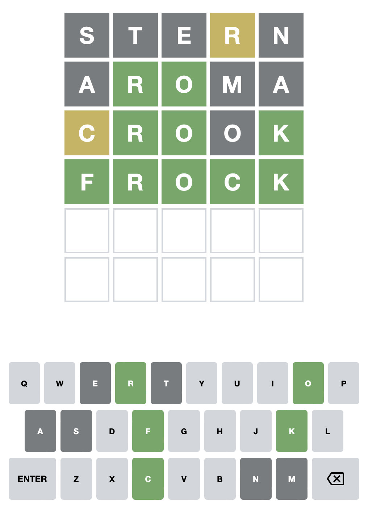

CIS 371 |
CSS and HTML |
Winter 2025 |
Objective
The objective of this series of assignments is to provide students with practice writing HTML and CSS.
Part 1: Static Wordle Board
Implement the Wordle board shown below in HTML and CSS.
(If you prefer, you can skip directly to Part 2 and complete them together as one assignment.)
For the most part, you are free to style the board however you like. It need not match the example below exactly. However,
- The keys should have rounded edges
- The "enter" and "backspace" keys should be wider than the letters
- The letters should be centered in their boxes horizontally and vertically
- The board should have some sort of title.
- The board should be centered on the page.
- The game/words you are displaying should display at least four attempts and have a mix of green and yellow boxes. (At this point, the words will be hard-coded.)
This assignment must be completed individually. You may not share code; but, you are encouraged to share high-level ideas with each other including:
- Which CSS properties you used
- Which selectors you used to avoid repetition
- How you got the letters centered in each box
When you are ready for me to give feedback, make a commit to your git repo that contains the message [Grade Me Part 1].
If you decide to combine Part 1 and Part 2, please make a commit containing the message [Defer to Part 2].
Part 2: Wordle using a template
Use an HTML templating system to generate the Wordle board.
- You may use any templating system you like (PHP, Razor (C#), ERB (Ruby), EJS (JavaScript), Jinja (Python), etc.). The course's sample code on GitHub contains examples of several of these templating systems.
- Your template should dynamically generate a board based on three parameters:
- The number of guesses allowed (which is the number of rows in the board),
- The word to be guessed (i.e., the answer -- which also tells you the number of columns in the board),
- The sequence (an array) of guesses thus far.
- For this part, you are not required to color the keys correctly.
- Put your answer to Part 1 in a safe place so I can still see it. (In other words, give your Part 1 answer a new name, or take care not to clobber your Part 1 answer when preparing Part 2.)
- In preparation for the next phase, please add a unique id to each display box and letter box. The ids should look something like
box-3-2andletter-q. - You may use the template to generate CSS as well. (You may need to do this to get the widths and placement correct.)
Scaffolding
If you decide to use ejs as your templating system, I have set up an ExpressJS server that will (1) render the .ejs
file for you, and (2) process the query string, and (3) pass the relevant parameters to the template. (You are not required to use this setup. You may also change
my setup as you see fit.)
If you choose to use the provided server, do the following:
- Run
npm installto installexpress,ejs, andJestlocally. - Place your
.ejsfile in theviewdirectory and give it a name that begins with with "wordle".
The Express server will pass query string parameters maxAttempts and guesses to your template as local variables.
If you named your template file wordle_part2.ejs, you could test it by
- Running
node index.jsfrom the command line. - Pointing your web browser to
http://localhost:3000/wordle_part2?maxAttempts=8&guesses=short,shots,farce,seven
(You can run/examine wordle_demo to see how the routing and parameters are handled.)
Part 3: Implement the game
Add JavaScript to your Wordle board so that you can play the game.
Rules:
- You may work in teams of up to two.
- Your implementation must be client-side only. (Obviously, you will need a server to provide the page and JavaScript; but, once the page loads, you shouldn't talk to the server again.)
- Use plain JavaScript: Don't use React, Angular, Vue, etc.
- You may either (1) write JavaScript to dynamically create the board based on the game parameters, or (2) add JavaScript to your template from Part 2 (in which case you'll need to re-run the template to change the paramters of the game).
- Your implementation must use Model-View-Controller design (i.e., separate Model, View, and Controller) classes. (If you have a different design in mind, feel free to ask.)
- All state should be stored in the model.
- Your view may not modify your model.
- You may use as much or as little of the provided starter code as you like.
- Put your answer to Part 2 in a safe place so I can still see it. (In other words, give your part 2 answer a new name, or take care not to clobber your Part 2 answer when preparing Part 3.)
As with Part 2, you may use the provided code as a starting point. The js directory contains the outline of a Model, View, and Controller for
Wordle. These files demonstrate how to add listeners to the keys, and how the Controller can connect the Model and the View. This sample code also grabs
the parameters for the game (maxAttempts and the answer) from the query string. (See js/Wordle.js.)
(If you prefer, you can skip directly to Part 4 and complete them together as one assignment.)
Part 4: Add unit tests
Add unit tests to your model and controller. (I suggest you use Jest; but, you may pick any test framework you like.)Setting up Jest
To run your Wordle code directly in a browser, you will want to use the ES 6 module import syntax. This ES6 syntax is different from the CommonJS syntax used by Node, which causes problems when testing. To address the differing import syntax, we will use a package called Babel to transform the code into something that Node handles.
The starter code has Jest and Babel already set up. However, if you need to add it to your project:
- Set up
npmin your project: npm init -y - Install
Jest: npm install --save-dev jest - Install
Babel: npm install --save-dev babel-jest @babel/core @babel/preset-env - Configure Babel by creating a file named
babel.config.jswith the following content:module.exports = { presets: [ [ '@babel/preset-env', { targets: { node: 'current', }, }, ], ], }; - Edit the
"scripts"/"test"property inpackage.jsonto equaljest
You can now run your Jest tests from the command line with npm test.
Submission
I will grade the parts of this assignment separately.
- When Part
nis complete, commit to themainbranch with a commit message that includes "[grade me n]" (the square brackets are important).
Updated Wednesday, 22 January 2025, 10:16 AM